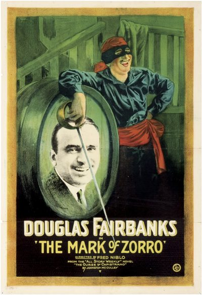

The Mark of Zorro
Studio: United Artists
Starring: Douglas Fairbanks, Marguerite De La Motte, Noah Beery, Sr.
Director: Fred Niblo
Writer: Douglas Fairbanks
Producer: Douglas Fairbanks
The Mark of Zorro is a 1920 American silent Western romance film starring Douglas Fairbanks and Noah Beery. This genre-defining swashbuckler adventure was the first movie version of The Mark of Zorro. Based on the 1919 story The Curse of Capistrano by Johnston McCulley, which introduced the masked hero, Zorro, the screenplay was adapted by Fairbanks (as "Elton Thomas") and Eugene Miller.
Watch Online: Internet Archive
Trivia
- Based on The Curse of Capistrano (novel by Johnston McCulley).
Previous Showings
4 Runs • 4 Festivals
All runs on record (4):
- July 22, 1998Dear Old Hollywood
- July 21, 1999Summer 1999
- July 28, 2004Summer 2004: Sixty-one Classic Movies, including 10 with Ronald Reagan and 9 Silent Picturesw/ Mr. Robinson Crusoe
- April 15, 2012Winter 2012